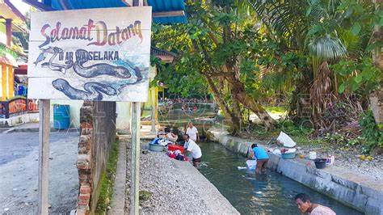
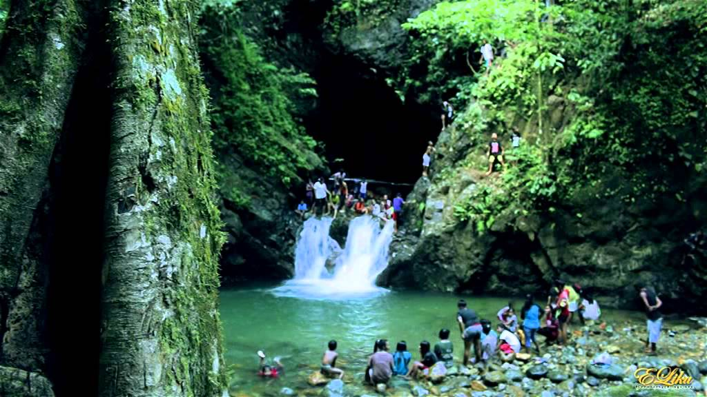

Kolam Morea/Belut raksasa & Air Terjun
 Destinasi Wisata Negeri Waai
Negeri/Desa Waai terletak di kabupaten Maluku Tengah, Provinsi Maluku. Negeri Waai berada tepat diantara Negeri Tulehu dan Negeri Liang. Untuk para wisatawan, Negeri Waai dikenal dengan wisata kolam Morea/Belut raksasa yang menjadi daya tarik para wisatawan. Tapi baru baru ini ada yang satu lagi tempat wisata yang booming di negeri Waai; yaitu Air Terjun. Air Terjun ini berada di kaki gunung Salahutu dan jaraknya lumayan jauh dari Desa. Sebenarnya Air Terjun ini sudah lama menjadi tujuan wisata bagi wisatawan lokal maupun asing. Namun jaraknya yang cukup jauh dan sangat terjal (turun naik bukit) membuat kebanyakan orang jarang kesana. Menyadari potensi luar biasa akan tempat ini untuk dijadikan tempat wisata, masyarakat negeri Waai yang diwakili raja/kepala desa Waai pun sepakat untuk mebuat terobosan besar dengan langkah membuat ulang akses jalan untuk menuju Air terjun tersebut. Di samping keindahan laut, Maluku juga memiliki hewan khas yaitu belut raksasa di Maluku Tengah. Belut yang disebut Morea Waai ini panjangnya dapat mencapai satu meter dengan ukuran paha orang dewasa. Keunikan belut raksasa Morea Waai semakin nyaman dilihat dengan adanya pepohonan rindang dan tanaman lain di sekitar kolam. Terdapat juga berbagai jenis ikan di kolam Wae Selaka yang dipelihara oleh masyarakat setempat. Selain terkenal karena ukurannya, belut Morea Waai terkenal jinak dan dapat dikendalikan oleh pawangnya. Morea Waai tinggal di dalam gua di sekitar kolam dan keluar ketika dipanggil oleh pawangnya. Wisatawan dapat mencoba memberi makan dengan telur ayam. Jangan khawatir untuk berinteraksi langsung dengan belut raksasa Morea Waai, karena mereka terkenal jinak. Warga pun terbiasa mencuci di kolam Wae Selaka. Tidak perlu khawatir takut digigit saat memberi makan.